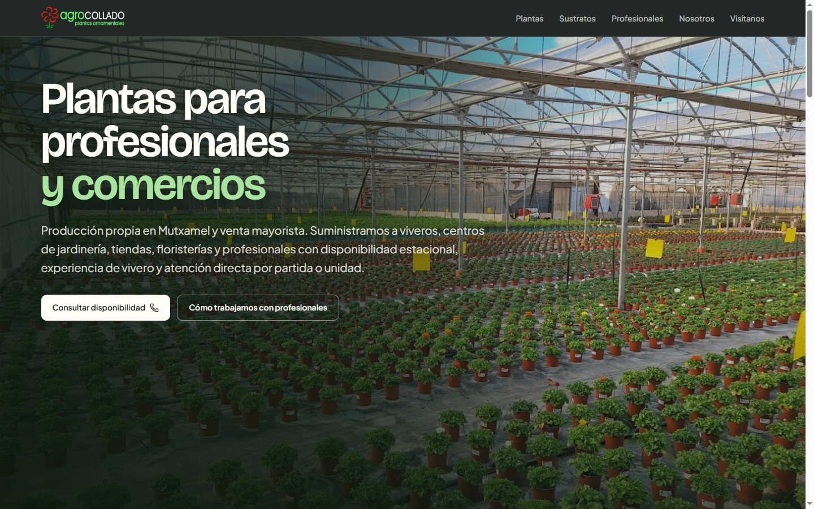

Web corporativa · Venta mayorista
Agrocollado
Web para un vivero de Mutxamel (Alicante) que vende plantas a viveros, centros de jardinería, tiendas, floristerías y profesionales.
Visitar web →Senior Backend Developer .NET · Madrid, España
Desarrollador backend con más de 10 años de experiencia construyendo APIs, integrando sistemas y automatizando procesos, con foco en IA aplicada al desarrollo.
// Program.cs · API mínima con .NET
var builder = WebApplication.CreateBuilder(args);
builder.Services.AddScoped<IInsightService, InsightService>();
var app = builder.Build();
app.MapGet("/api/insights/{id:int}", async (int id, IInsightService svc) =>
{
var insight = await svc.GetAsync(id);
return insight is null
? Results.NotFound()
: Results.Ok(insight);
});
app.Run();
public record Insight(int Id, string Title, double Score);Trabajo seleccionado
Disponible para ayudarte a crear tu proyecto. Me gusta colaborar con profesionales que necesitan una web clara, rápida y que les ayude a conseguir clientes.
Hablemos →
Web corporativa · Venta mayorista
Web para un vivero de Mutxamel (Alicante) que vende plantas a viveros, centros de jardinería, tiendas, floristerías y profesionales.
Visitar web →
Web profesional · Servicios legales
Web para un despacho de abogados de Alicante: áreas de práctica (penal, violencia de género, civil y desahucios), preguntas frecuentes, reseñas y contacto directo.
Visitar web →Quién soy
Soy desarrollador .NET orientado al backend, con experiencia en C#, SQL Server, integración de sistemas y automatización de procesos. Desarrollo APIs, mantengo y mejoro aplicaciones existentes y construyo soluciones conectadas con necesidades reales de negocio.
Me interesa construir software claro, mantenible y útil. Valoro el trabajo bien hecho, la comunicación con el equipo y entender el problema antes de escribir código.
Trayectoria
Nfq Advisory, Solutions, Outsourcing · Madrid
Nfq Advisory, Solutions, Outsourcing
Software a medida, automatización de procesos y soluciones basadas en datos e IA. Migración y validación de datos, procesos ETL, contenedores y colaboración con equipos de negocio.
Savia · Madrid
Backend de un sistema de gestión de fichajes, nóminas, permisos y vacaciones: lógica de negocio, validaciones y mejora evolutiva de módulos existentes.
Hiberus · Valencia
.NET Web API Core (arquitectura, optimización y componentes genéricos), Transact-SQL, Azure Web Jobs y despliegue continuo en la plataforma de logística KVP.
TIBA · Valencia
.NET Web API Core, optimización de rendimiento, Transact-SQL, Azure Web Jobs e integración continua en una plataforma logística internacional.
Grupo GFT · Alicante
Mantenimiento y nuevas funcionalidades en .NET Web API Framework para la web e intranet de Solvia.
Si necesitas ayuda con la web de tu negocio o profesión, escríbeme por LinkedIn.
Contactar por LinkedIn